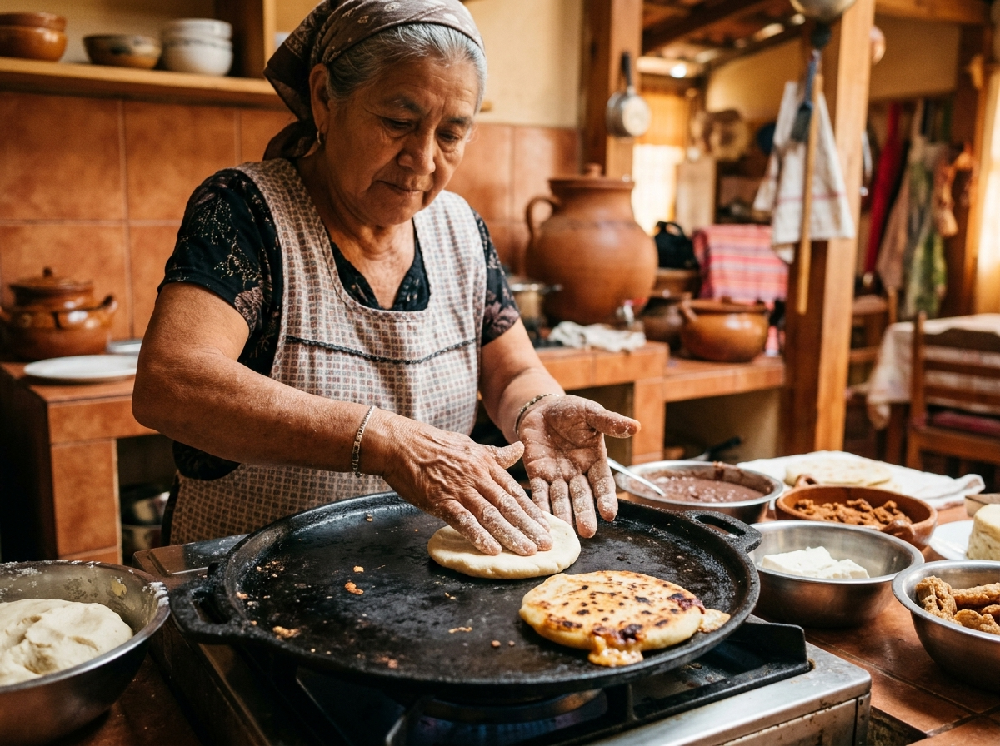
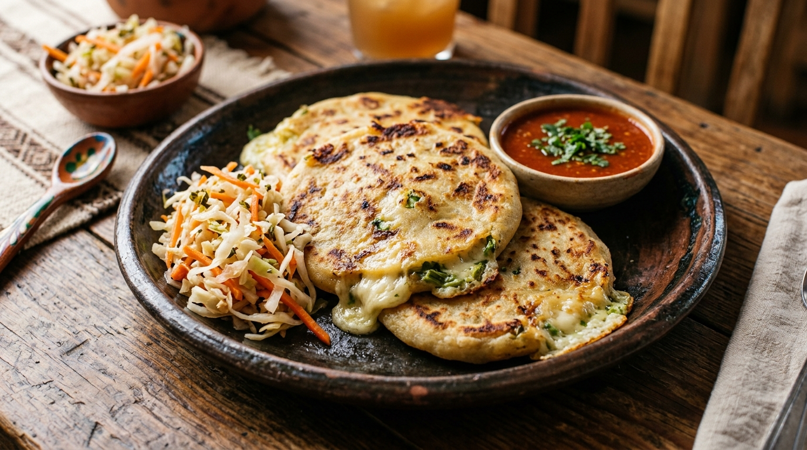

El Arte de la Pupusa
Understanding the 5-step artisanal process behind El Salvador's national dish at Adamary’s.
Hand-Patted Masa
The foundation of a perfect pupusa is masa de maíz—ground corn dough prepared with just the right amount of moisture. Our pupuseras pat each portion by hand, forming a smooth, elastic pocket ready for filling.

Traditional Fillings & Loroco
The masa pocket is sealed around authentic fillings: creamy Salvadoran quesillo, tender edible loroco vine flower buds, slow-simmered chicharrón (seasoned pork), or velvety refried red beans.

High-Heat Comal Griddling
The filled disc is gently flattened and placed directly onto a seasoned iron comal griddle. Cooked over steady high heat until golden-blistered on the surface while melted cheese oozes from the sides.
Griddle Science
Cooking on a hot comal creates the signature crisp exterior while trapping steam inside to melt the cheese thoroughly without breaking the delicate masa skin.
House Curtido Slaw
A pupusa is incomplete without Curtido—lightly fermented shredded cabbage, carrots, sliced onions, Mexican oregano, and mild red pepper steeped in tangy spiced vinegar to cut through the rich cheese.
Tangy Balance
Curtido provides acidity, crunch, and brightness, creating a harmonious bite alongside the warm, savory pupusa.
Warm Salsa Roja
Finished with a ladle of mild, warm tomato salsa cooked with onions, garlic, and sweet bell peppers. Spooned generously over the pupusa right before eating with your hands!
Traditional Etiquette
In El Salvador, pupusas are traditionally eaten by hand! Pinch a piece of pupusa, top with curtido and a splash of salsa roja, and enjoy.
Ready to Taste Fresh Pupusas?
Join us at 3100 Central Ave or call ahead for quick pickup.